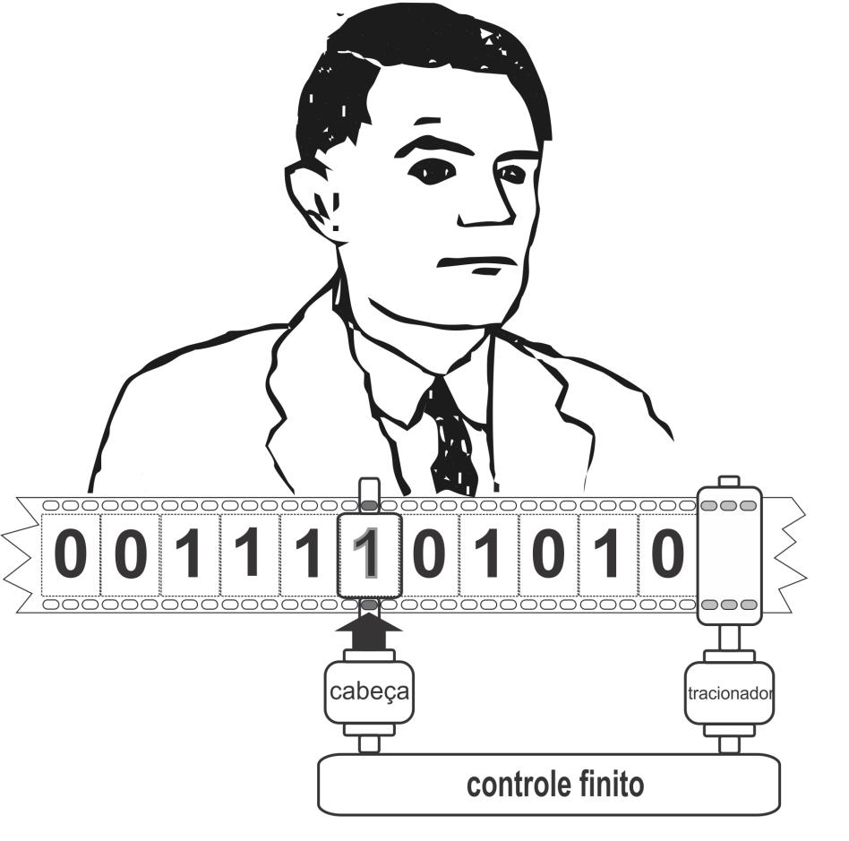

Definição
O conceito de máquina de Turing é semelhante ao de uma fórmula ou equação. Assim, há uma infinidade de possíveis máquinas de Turing, cada uma correspondendo a um método definido ou algoritmo. Turing propôs que cada algoritmo, formalizado como um conjunto finito de instruções bem definidas, pudesse ser interpretado e executado por um processo mecânico.
